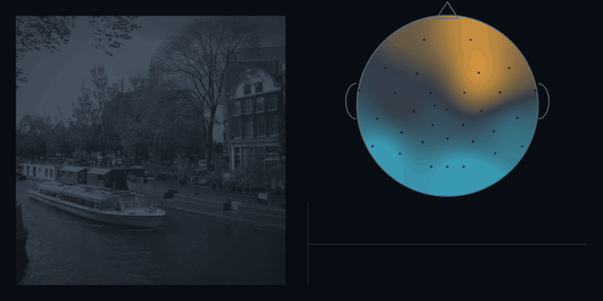
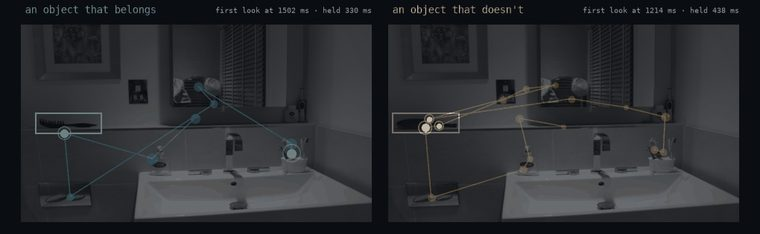
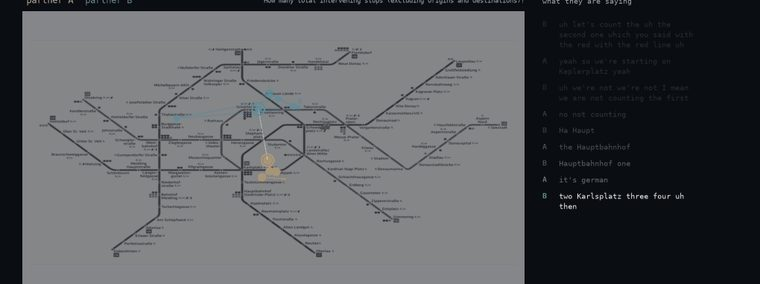
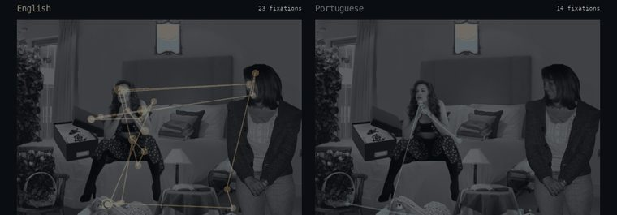
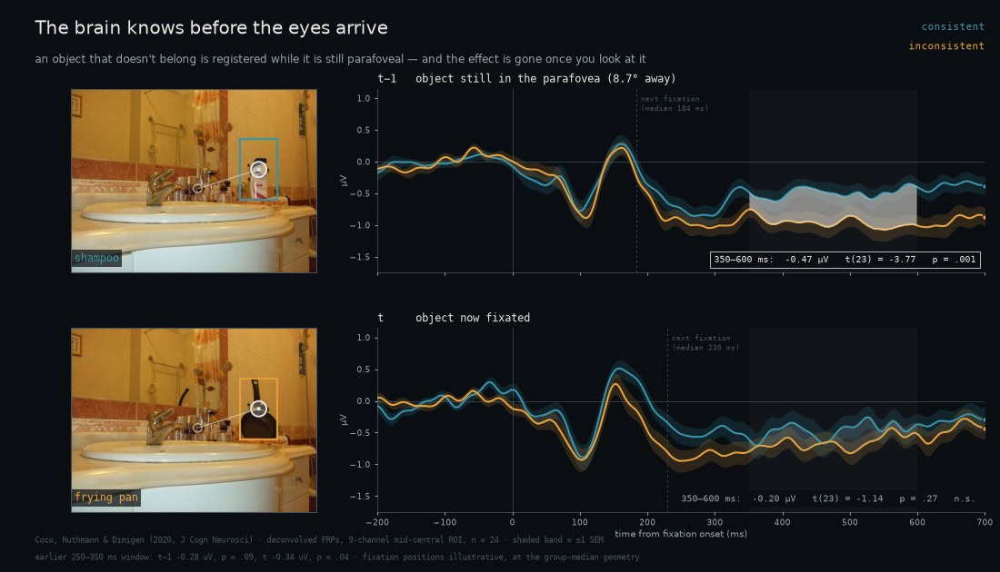
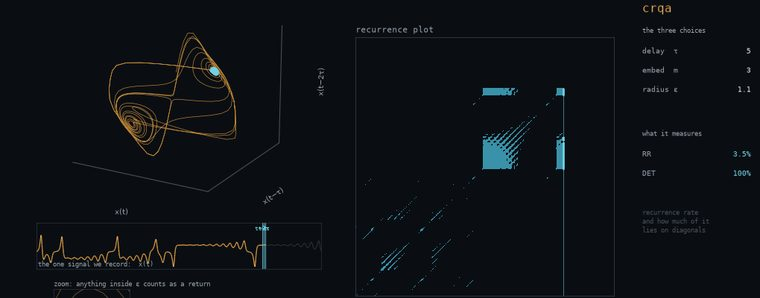
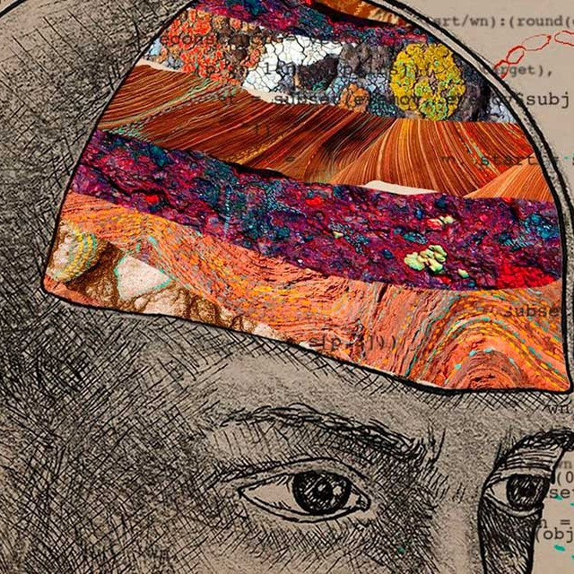

I study how attention and memory jointly shape our experience of the visual and linguistic world, and what changes when that machinery begins to fail. I record eye movements and brain activity while people view, remember and describe naturalistic scenes, then use computational modelling and machine learning to turn those signals into predictions about individual cognition.
A central thread is neurodegeneration: identifying the earliest attentional and mnemonic markers that separate healthy ageing from mild cognitive impairment and dementia, and turning them into practical diagnostic tools.

Object semantics and visual binding are largely preserved in MCI and Alzheimer's; other signatures are specific enough to tell conditions apart before diagnosis.
the line →
What an object means changes where the eye goes and what is remembered: an object that doesn't belong is found sooner and held longer.
watch it happen →
When two people solve a task together their eyes and speech become coupled, and how tightly predicts how well they do.
watch it happen →
Say the same thing about a scene and you look at it the same way, in English, Portuguese or Japanese alike.
watch it happen →
Time-locking the EEG to each fixation during free viewing, rather than to an artificial trial onset.
watch it happen →
Recurrence-based tools for coupled behavioural time-series, released as the crqa R package.
how it works →Cross-Recurrence Quantification Analysis for categorical and continuous time-series: profiling and in-depth recurrence measures.
Extracts dependent measures (area under the curve, latency, x-flips) from two-dimensional mouse-tracking trajectory data.

How panosbaras.com sees me
I am an Associate Professor at the Department of Psychology, Sapienza University of Rome. My work merges cognitive neuroscience with computational modelling, using eye-tracking, electrophysiology and machine learning across the domains of language, vision, memory and attention.
Before joining Sapienza, I held positions at the University of East London, the University of Edinburgh and the University of Lisbon. I earned my PhD at the University of Edinburgh's School of Informatics.
I am actively looking for motivated students and scholars to join the lab. If you're interested in attention, memory and their breakdown in ageing and neurodegeneration, get in touch.